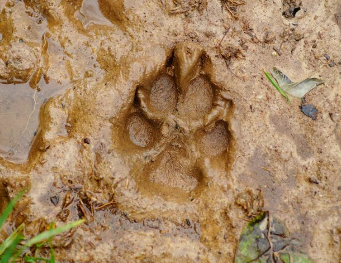
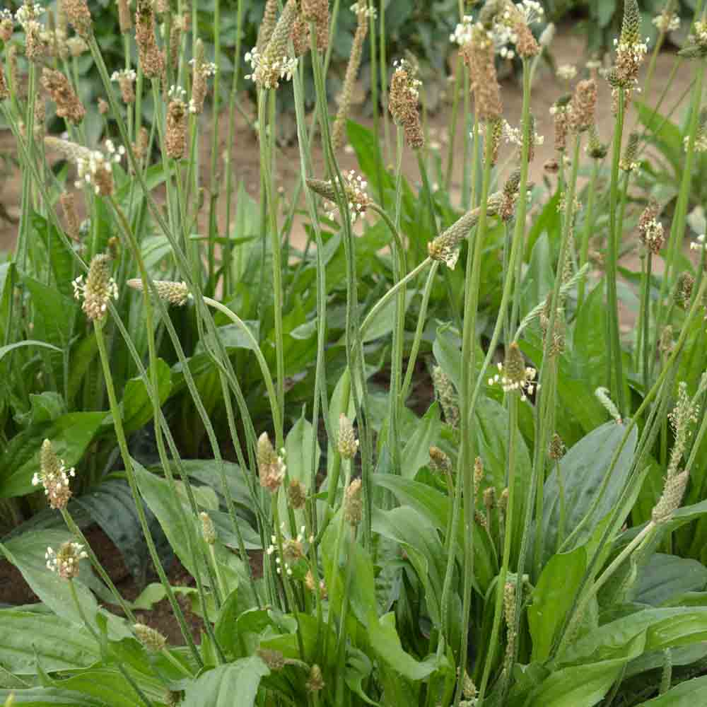
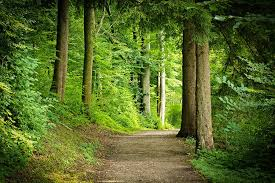
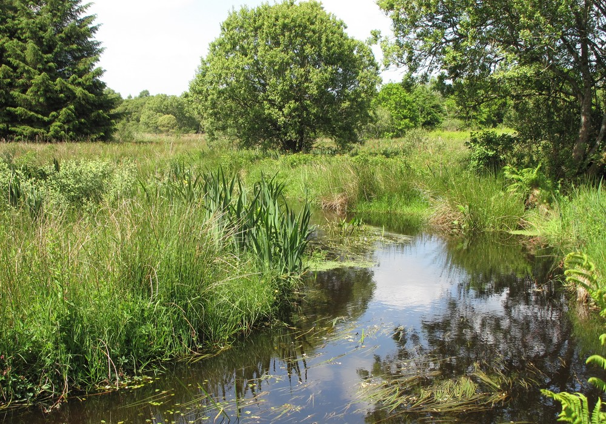
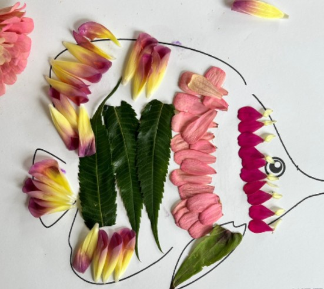
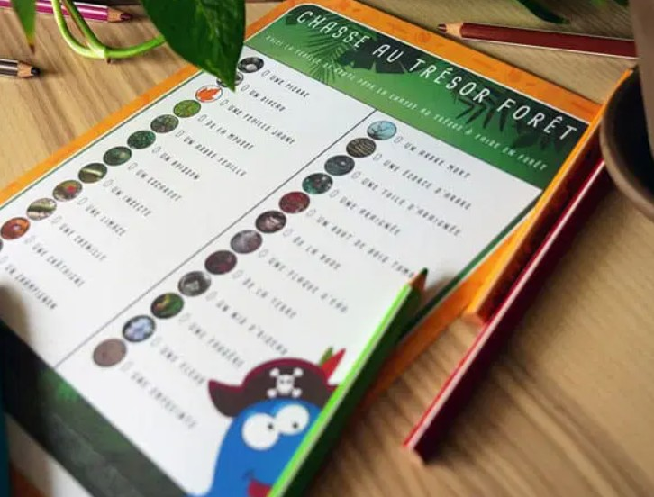
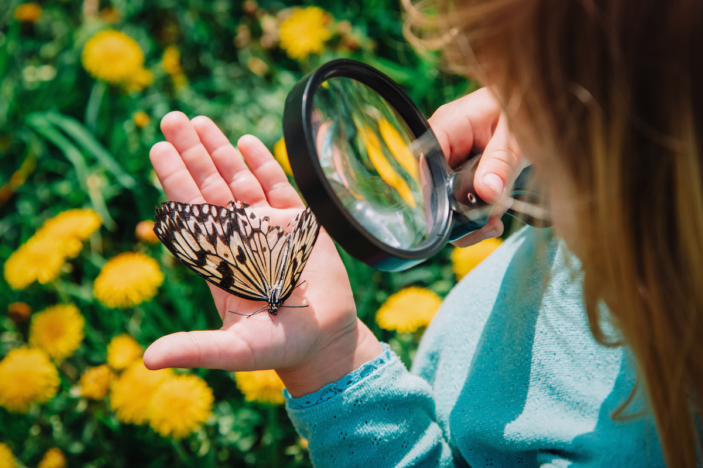

Grand public
Les animations grand public sont conçues pour être accessibles, conviviales et adaptées à des contextes variés : événements, sorties, ateliers familiaux ou temps de découverte.
Elles favorisent la rencontre, la créativité et la sensibilisation à la nature.

Sur les traces des animaux
Contenu :
Découverte des indices de présence animale et observation des traces laissées
dans le milieu naturel, avec temps d’échange et jeux d’identification.
Objectifs :
- Découvrir la faune locale
- Développer l’observation
- Sensibiliser à la biodiversité
Public visé :
Grand public, familles
Nombre maximum de participants :
12 à 15 personnes
Tarif :
150€ pour 1h30 à 2h d’animation

Plantes locales
Contenu :
Découverte des plantes locales et de leurs particularités à travers une balade,
une observation d’échantillons ou un atelier simple autour du végétal.
Objectifs :
- Découvrir la flore locale
- Développer la curiosité
- Sensibiliser à l’environnement
Public visé :
Grand public, familles
Nombre maximum de participants :
12 à 15 personnes
Tarif :
150€ pour 1h30 à 2h d’animation

Balade nature commentée
Contenu :
Sortie guidée en milieu naturel, ponctuée d’observations, de temps d’échange
et d’explications sur la faune, la flore et les paysages.
Objectifs :
- Comprendre son environnement
- Développer l’attention au vivant
- Favoriser la découverte sensible de la nature
Public visé :
Grand public
Nombre maximum de participants :
15 personnes
Tarif :
150€ pour 1h30 à 2h d’animation

Découverte des milieux
Contenu :
Exploration d’un milieu spécifique avec mise en lumière de ses caractéristiques,
de ses espèces et des interactions qui le composent.
Objectifs :
- Comprendre les écosystèmes
- Observer la biodiversité
- Sensibiliser à la protection des milieux
Public visé :
Grand public
Nombre maximum de participants :
12 à 15 personnes
Tarif :
150€ pour 1h30 à 2h d’animation

Atelier libre création nature
Contenu :
Espace de création libre avec matériaux naturels à disposition,
permettant à chacun de réaliser une composition ou une petite œuvre selon ses envies.
Objectifs :
- Favoriser l’expression libre
- Encourager la créativité
- Proposer un moment convivial et accessible
Public visé :
Grand public, familles
Nombre maximum de participants :
10 à 12 personnes en simultané
Tarif :
150€ pour 1h30 à 2h d’animation

Jeu de piste nature
Contenu :
Parcours ludique avec énigmes, défis et observations autour de la nature et de la biodiversité,
seul, en famille ou en petits groupes.
Objectifs :
- Apprendre en s’amusant
- Stimuler l’observation
- Favoriser la coopération
Public visé :
Grand public, familles
Nombre maximum de participants :
15 personnes ou plusieurs petits groupes
Tarif :
150€ pour 1h30 à 2h d’animation

Mini ateliers découverte
Contenu :
Ateliers courts autour de différentes thématiques nature :
plantes, traces, matériaux naturels, découverte sensorielle ou petite création.
Objectifs :
- Faire découvrir la nature de façon simple et rapide
- Toucher différents publics
- Créer des temps d’animation dynamiques
Public visé :
Grand public, événements, familles
Nombre maximum de participants :
8 à 10 personnes par mini-atelier
Tarif :
150€ pour 1h30 à 2h d’animation
Vous souhaitez organiser un atelier ?
Contactez-moi pour en discuter